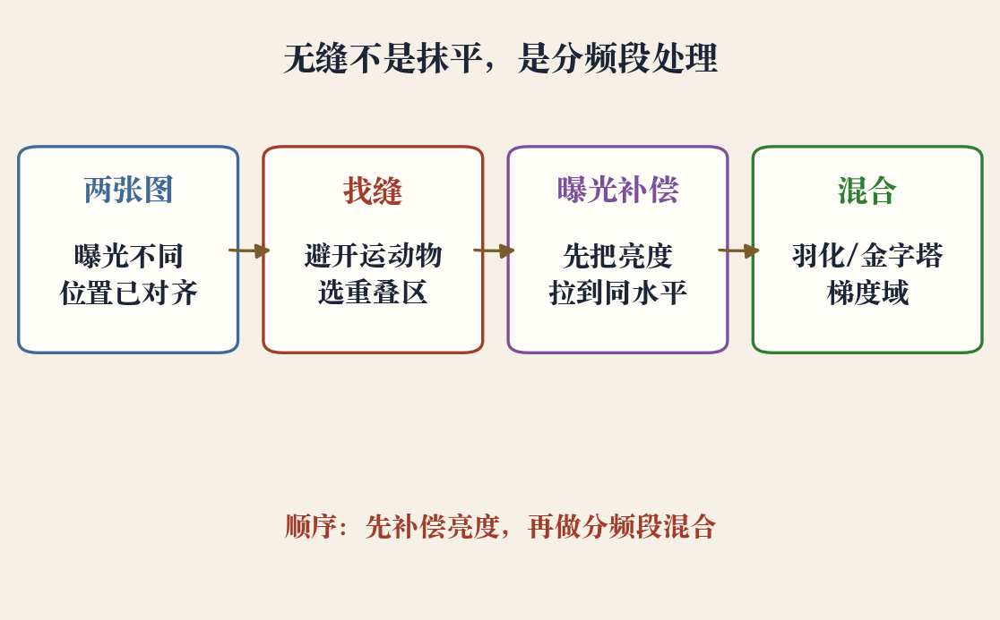
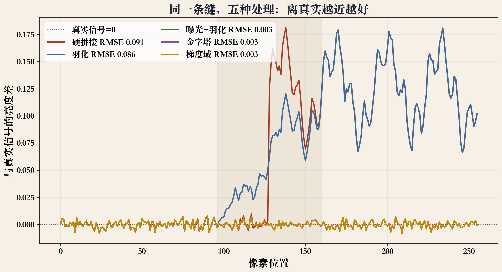
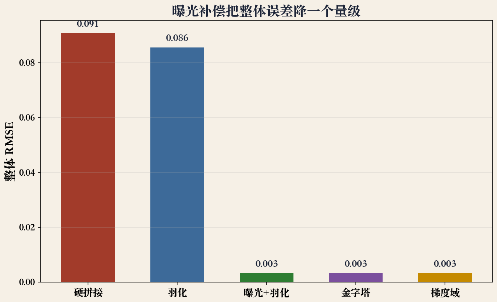

开场 · 混合与曝光补偿
位置对齐了，亮度还没对齐
- 上一集把图投到同一曲面，位置已经对上。
- 接缝处左边暗、右边亮，或是一条硬边。
- 这一集把重叠区混得看不出缝。
- 低频管曝光，高频保边缘。
依据：原书第 544–547 页
本集三件事
先对齐位置（上一集）
再统一亮度
最后分频段混合
原书第 544 页 · 混合任务
接缝之后，还有混合
- 接缝选好、杂物去掉，还要把图混起来。
- 要补偿曝光差，也要处理局部错位。
- 曝光差是全局亮度台阶。
- 错位是局部重影，两种一起治。
依据：原书第 544 页
接缝与混合
接缝：决定用哪张图
混合：决定怎么过渡
只平均，台阶仍在
原书第 544 页 · 羽化
羽化：一个宽度难两全
- 重叠区按距离给权重，越靠中心权重越大。
- 过渡窄，曝光台阶还在。
- 过渡宽，高频边缘被糊掉。
- 固定宽度很难同时满足两头。
依据：原书第 544 页
混合管线 · 程序生成示意图
顺序：先补偿，再混合
- 两张图曝光不同，位置已经对齐。
- 先在重叠区找缝，避开运动物体。
- 做曝光补偿，把亮度拉到同一水平。
- 最后用羽化、金字塔或梯度域混合。
依据：本集实验

混合管线：两张图→找缝→混合，曝光补偿先把亮度拉齐｜程序生成，未用教材或论文原图
原书第 545 页 · 拉普拉斯金字塔
金字塔：每层用自己的宽度
- 把图像分解成带通金字塔。
- 每一层用自己的过渡宽度。
- 低频层慢慢过渡，抹平曝光差。
- 高频层快速过渡，保住边缘纹理。
依据：原书第 545 页
按频率分工
粗层：宽过渡
细层：窄过渡
并没有把图变模糊
原书第 545 页 · 层数
层数：两层有时就够
- 实际用不了很多层。
- 少到两层，有时就够补偿曝光差。
- 平滑渐晕，低频层就够。
- 局部阴影，才需要更多层。
依据：原书第 545 页
先少后多
层数多：细，但难调
层数少：稳，够用
两三层能压住多数曝光差
原书第 545 页 · 梯度域
梯度域：复制梯度，不复制像素
- 不复制像素，复制新图块的梯度。
- 梯度管亮暗怎么变，像素管有多亮。
- 接缝边界给精确匹配条件。
- 解泊松方程，把梯度积分回像素。
依据：原书第 545 页
原书第 546 页 · 变分
变分：让每条坡度都对上
- 除了直接解泊松方程，还可以最小化变分问题。
- 让重建梯度尽量接近目标梯度。
- 离散后是稀疏最小二乘。
- 梯度只定相对高低，还要固定一个像素。
依据：原书第 546 页
自由度
整体加常数仍是解
固定一点，或往原图轻拉
相邻像素给一个约束
原书第 546 页 · 细节
对数域与双边缘
- 曝光差是乘法，对数域里变成加法。
- 对数域补偿，纹理对比不容易被拉平。
- 接缝附近梯度太大，会复制出双边缘。
- 强梯度要小心处理。
依据：原书第 546 页
两个提醒
偏移用对数域
复制前看接缝梯度
一条边别变两条
方法对照 · 程序生成示意图
对照：三种误差差一个量级
- 硬拼接：接缝处一个大台阶，整体误差约 0.091。
- 羽化：台阶摊开，误差约 0.086。
- 曝光补偿后再羽化：误差约 0.003。
- 金字塔和梯度域也到 0.003。
依据：本集实验

五种处理与真实信号的亮度差：硬拼 0.091、羽化 0.086、补偿后 0.003｜程序生成，未用教材或论文原图
原书第 547 页 · 大曝光差
大曝光差：先分清整体和局部
- 中等曝光差，金字塔和梯度域已经够好。
- 差得很大时，要另想办法。
- 大差异常常是局部的，比如镜头渐晕。
- 一个全局系数治不了局部差异。
依据：原书第 547 页
渐晕
中心亮，四角暗
要一张空间变化的校正图
先判断整体还是局部
原书第 547 页 · 局部校正
局部校正：分块、平滑、迭代
- 迭代估计每张源图与混合结果的局部校正。
- 分块拟合二次传递函数。
- 相邻块平均，块间用样条插值。
- 每轮重新羽化混合，通常重复三次。
依据：原书第 547 页
原书第 547 页 · 辐照度域
根本解：回到辐照度域
- 用每张图的曝光值转成辐照度图。
- 再拼成高动态范围图像。
- 像素值是曝光后的结果，辐照度是场景亮度。
- 这条路要曝光值和相机响应，门槛更高。
依据：原书第 547 页
HDR 的代价
需要曝光值与相机响应
工程门槛更高
常先用局部校正
实验 · 程序生成示意图
实验：补偿把误差降一个量级
- 实验做了十一项断言，全部通过。
- 硬拼接整体误差约 0.091，羽化约 0.086。
- 曝光补偿后约 0.003。
- 对数域增益与线性拟合相差不到百分之一。
依据：本集实验

整体误差对照：硬拼 0.091、羽化 0.086、曝光补偿后 0.003｜程序生成，未用教材或论文原图
工程清单 · 本集归纳
工程顺序：找缝、补偿、混合、检查
- 先找缝，避开运动物体。
- 先补偿亮度，再混合。
- 中等差异用羽化或两三层金字塔。
- 差很大，考虑局部校正或辐照度域。
依据：本集实验
检查三样
接缝、重影、双边缘
接缝还可见，先查曝光
别一上来就上最复杂的方法
收束 · 下一集
收束：缝是混出来的
- 羽化有低频和高频的两难。
- 金字塔按频段给过渡宽度。
- 梯度域复制梯度、解泊松。
- 大曝光差要局部校正或回辐照度域。
依据：本集实验
下一集
手机全景与 360 相机
自动找缝、补偿、混合
用户只负责转一圈